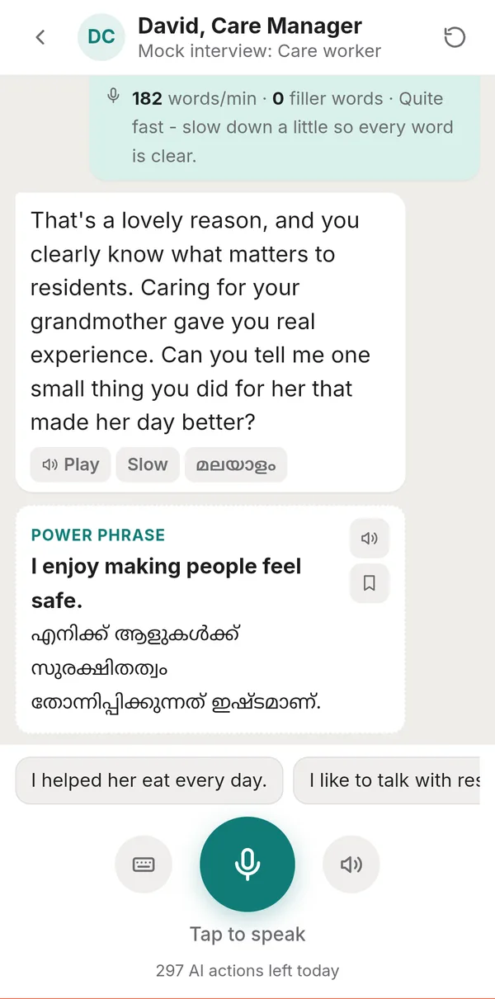
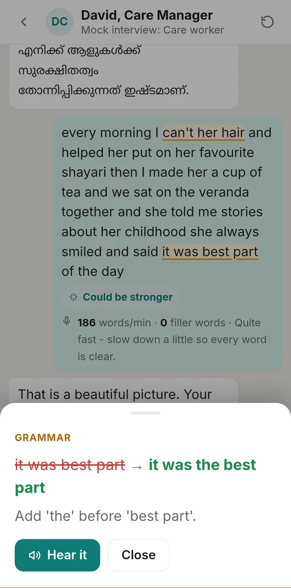
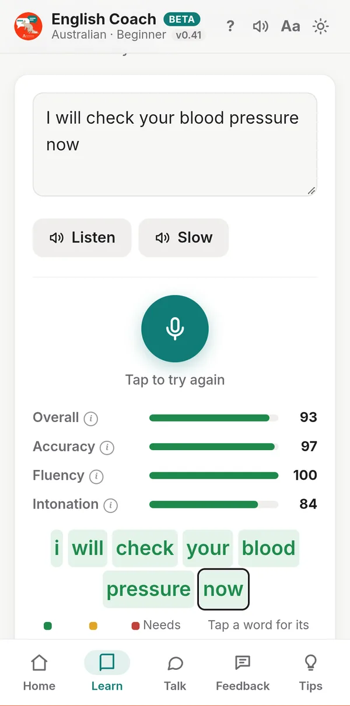
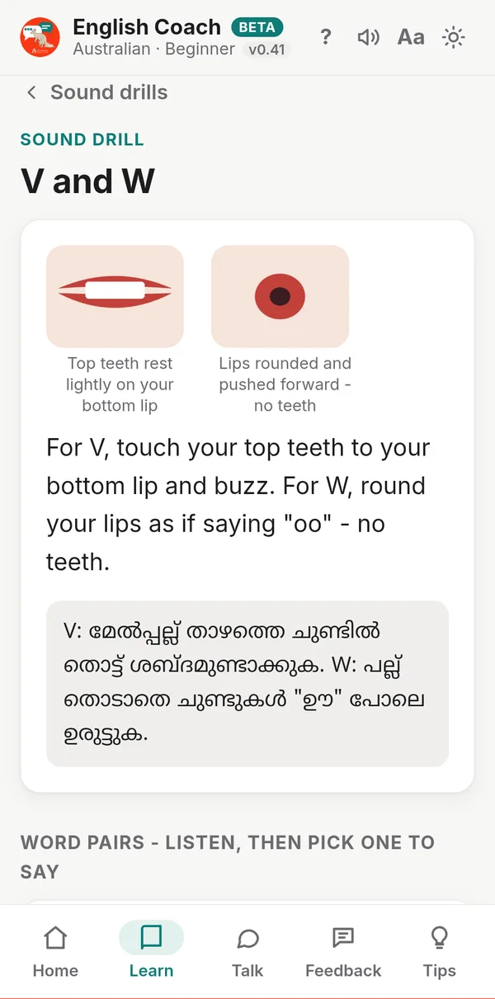
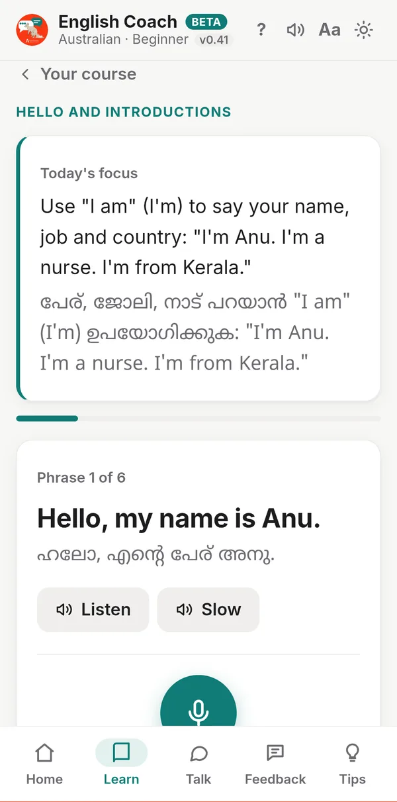
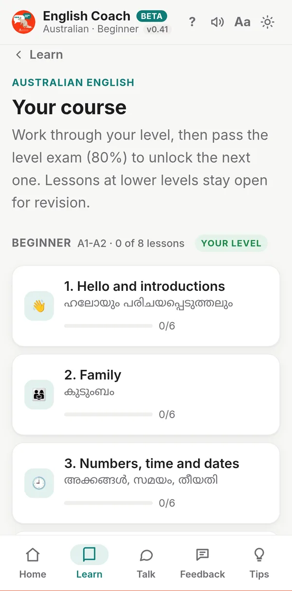
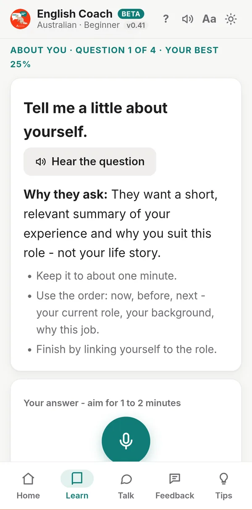
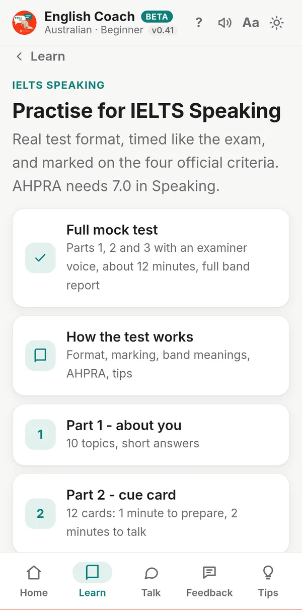
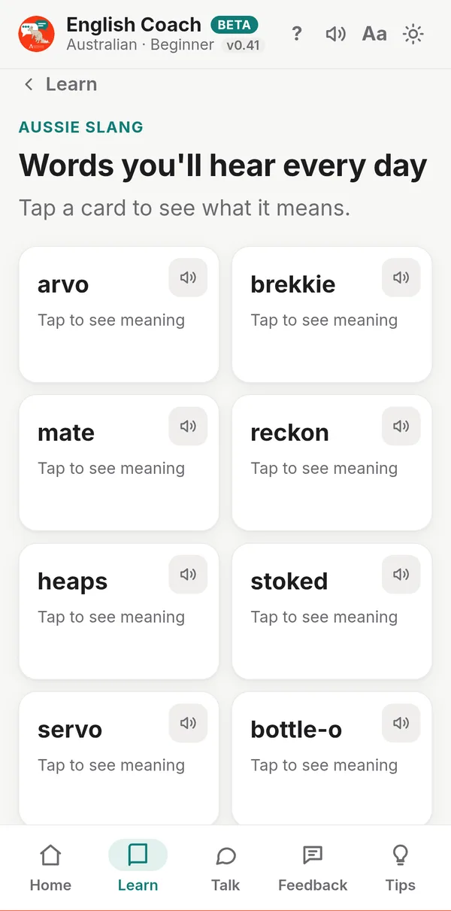

Lingo / English Coach app
Speak confident English at work.
English Coach is a speaking practice app from Australian Jeevitham. Talk with an AI coach in real situations - a job interview, a shift handover, a chat with your neighbour - and see a better way to say each sentence. Help is in Malayalam, Hindi or Tamil.
- Trial period
- Beta
- Runs in your phone's browser
Start without an account. The AI coach needs an account.

What you can do
Talk with an AI coach
56 conversations from everyday life and work - job interviews, aged care, nursing handovers, phone calls and small talk. Speak your reply and the character answers.
- Account needed
See a better way to say it
Under every reply you see Excellent, Could be stronger or Needs a fix. Tap it for the correction, the reason and a natural way to say it.
- Account needed
Pronunciation scores
Say any sentence and get scores for accuracy, fluency and intonation. Every word is coloured green, yellow or red, so you know what to fix.
- Account needed
Sound drills
9 drills for the sounds Malayalis find hardest - V and W, TH, Z, F and P and more - with pictures of the mouth and tips in your language.
- No account needed
Lessons in your language
A step-by-step course for Beginner and Intermediate, everyday phrases, vocabulary and slang, with meanings in Malayalam, Hindi or Tamil.
- No account needed
IELTS, OET and interviews
IELTS Speaking parts 1 to 3 and a mock test, 10 OET nursing role-plays, and 20 healthcare interview questions with model answers and feedback.
- Marking needs an account
See it in action
Real screens from the app on a phone. Swipe to see more.








What needs an account
Without an account
- The course, everyday phrases and quizzes
- Sound drills, checked by your phone
- Listening practice, vocabulary, slang and tips
- IELTS and OET guides, interview questions and model answers
With an account
- Conversations with the AI coach
- Detailed pronunciation scores and natural voices
- The placement test and weekly level exams
- IELTS and OET speaking marked on the official criteria
- Feedback on your interview answers
Why? Every AI reply costs Australian Jeevitham money to run, so these parts need an account with a daily allowance.
How to start
- Open the appTap Open the app on your phone, and answer three quick questions: which English, your mother tongue and your level.
- Add it to your home screenOn Android, tap Install. On iPhone, open it in Safari, tap Share, then Add to Home Screen.
- Create an account when you are readySign in with Google or your email to talk with the AI coach and take the placement test.
Questions
Do I need an account?
No account is needed for the lessons, the course, sound drills, listening, vocabulary, slang and tips. The parts that use the AI coach need an account: conversations, the placement test and level exams, the 1-minute speaking check, IELTS and OET marking, interview feedback, detailed pronunciation scores and natural voices.
Why do some parts need an account?
Every AI reply and every detailed pronunciation score costs Australian Jeevitham money to run. An account lets us keep it fair with a daily allowance for each person.
Does it cost anything?
English Coach is in a trial period while it is in beta. Each account has 60 AI actions a day, which reset every day. If anything changes, we will tell you in the app first.
Which phones does it work on?
It runs in your phone's web browser, so there is nothing to download from an app store. Use Chrome on Android or Safari on iPhone, or Chrome on a computer. Speaking practice works best in Chrome on Android or a computer; if the microphone does not work, you can type your replies instead.
How do I put it on my home screen?
On Android, open the app in Chrome and tap Install on the Home screen card, or open the Chrome menu and tap Install app. On iPhone, open it in Safari, tap Share, then Add to Home Screen.
Is it only for nurses?
No. There are conversations for everyday life, healthcare, technology, engineering, education, professional services and job interviews. Healthcare has the most, because many people learning with Australian Jeevitham work as nurses and care workers.
Which English can I learn?
Australian, British or Indian English, each with its own voices, lessons and slang. Help and meanings can be in Malayalam, Hindi, Tamil or English only.
How do the levels work?
There are four levels: Beginner, Intermediate, Advanced and Leadership. With an account, a short placement test finds your starting level. You can take an exam once a week to move up; a score of 80% or more passes.
Does it work without internet?
Lessons, slang and tips work offline once the app has been opened. Conversations, exams and detailed pronunciation scores need internet.
What happens to what I say?
What you say in conversations is sent to the AI coach (Anthropic's Claude) to reply and give feedback, and your voice is sent to Microsoft Azure Speech for detailed pronunciation scores. Your practice progress stays on your own phone. Never share real passport, bank or patient details when you practise. You can delete your account at any time in My account.
Ready to practise?
Open English Coach and try a lesson or a sound drill - no account needed to start.
Was this page useful?
Your message goes to Binu at Australian Jeevitham. Please do not put passwords or bank details in it.
Beta. English Coach is still being improved, and scores from the AI coach are practice guides, not official IELTS or OET results. Last updated: 11 November 2026.